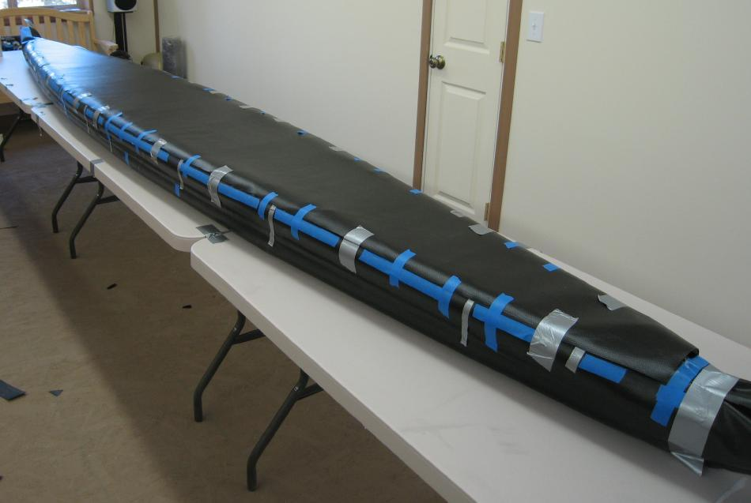

| Sonnet ( Deck) | Menu Previous Page Next Page |
|

The deck is attached in one piece that runs to within 12" to 18" (304mm - 457mm) of the bow and stern. The stems will be covered with the excess hull material still in place after skinning the hull.
PVC ( 10oz or 18oz) is used to skin the one piece deck. Place a sheet of it atop the sponsons that is 2 inches wider than the deck ( max beam) and mark with pencil or tape around the curve of the inflated gunwales. Mark the area to be cut an inch or so past the sponson centerline. Cut out the deck and tape it to the top of the sponsons as seen above. Pull it very tight while taping. Run tape along the base of the deck / sponson overlap and the deck ends to serve as a border for the vinyl cement. This will allow for a clean glue line and will also serve to keep excess glue from running down the sides. (Continued Below) Remove the deck and apply 2 coats of cement to the deck underside edge 1" (25mm) wide and also 1"(25mm) above and along the tape border on the hull. After drying, place the deck back in it's original location, and retape tightly. Use a heat gun to reactivate the cement, and apply pressure to the PVC to insure a good bond. Start at the center and work towards the ends. Work slowly to minimize wrinkles. |
|